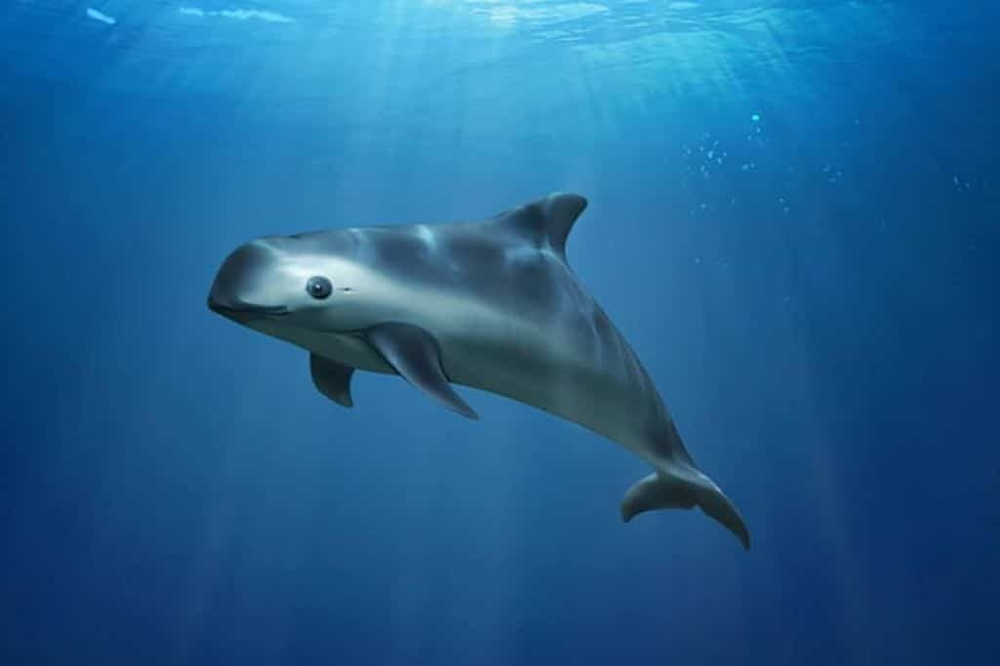
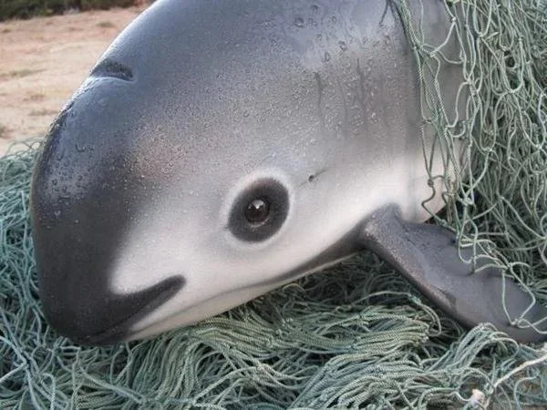
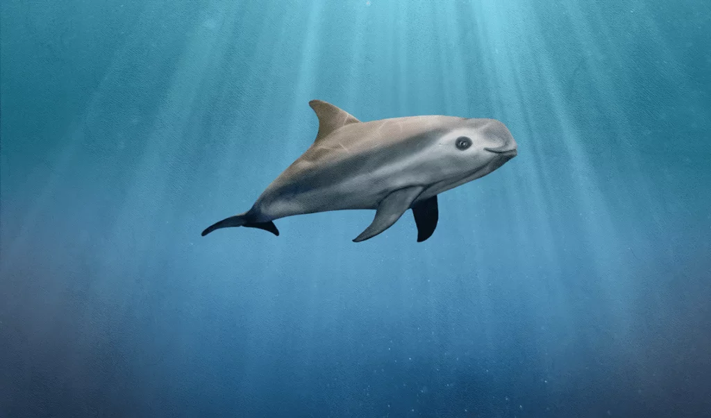
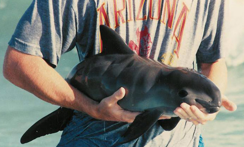

The vaquita is the world's rarest and smallest porpoise species, critically endangered due to bycatch in fishing nets. It inhabits shallow waters of the northern Gulf of California. Vaquitas have a distinctive facial coloration and shy behavior.


